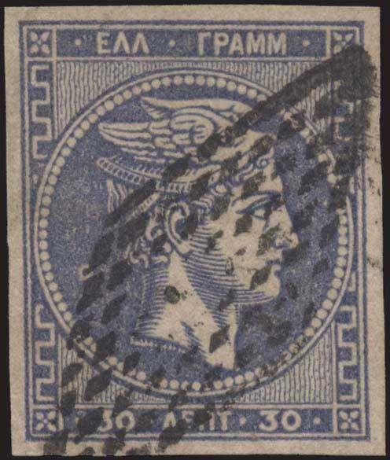

Note: on my website many of the
pictures can not be seen! They are of course present in the
catalogue;
contact me if you want to purchase the catalogue.
This cancel consists of a number of dots with a numeral in the center; different for every town. They were introduced on 1st October 1861 and withdrawn on 16 January 1881. The numbers 136 to 152 are rare. The following numbers corresponded to the following towns
1: Athens
2: Piraeus
4: Megara
5: Korinthe
6: Akrata
7: Aegion
8: Kalabrita
9: Patras
10: Lechaina
11: Kyllini
12: Gastouni
13: Pyrgos
14: Argos
15: Nafplion
16: Kranidion
18: Tripolis
19: Karytaena
20: Dimitsana
21: Andritsaena
22: Agonlivitsa
23: Megalopolis
24: Androisa
25: Kiparissia
26: Pylos
27: Metoni
28: Koroni
29: Nission
30: Petalidion
31: Kalamae
32: Sparta
33: Gythion (or Gytheion)
34: Areopolis
36: Monembasis(?)
37: Astros
38: Leonidion
39: Thivae
40: Livadia
41: Atalanti
43: Lamia
44: Karpenission
45: Amphissa
47: Poldwriklon
48: Nafpaktos
49: Messolonghion
50: Agrinion
51: Amf. Argos
54: Aetolikon
56: Chalkis
59: Karvstos
60: Kymi
62: Xirochorion
63: Aigina(?)
64: Poros
65: Ydra (or Hydra)
66: Spetsae
67: Siros
68: Kea
71: Andros
73: Mykonos
74: Naxos
77: Thera
80: Milos
83: Skyros
84: Skiatos
85: Scopelos Island
86: Filiatra
87: Zacholi
88: Vytina
92: Hypati
93: New Mizela
94: Stylis
95: Constantinopel (Turkey)
96: Smyrna (Turkey)
97: Alexandria (Turkey)
98: Tessaloniki (Turkey)
99: Janina (Turkey)
101: Ibraila (Walachia, Romania)
105: Arta (Turkey)
106: Kerkyra (Ionian Islands)
107: Patos (Ionian Islands)
108: Lefkas (Ionian Islands)
109: Ithaca (Ionian Islands)
110: Argostolion (Ionian Islands)
111: Zakynthos (Ionian Islands)
112: Kythera (or Kithira)
114: Avlonarion
115: Agios Petros
116: Aghios Petros(?)
118: Xylokastron
119: Kiaton
120: Lixourion
123: Stemnitsa
124: Gargalianoe
128: Aegialos
130: Lavrion
135: Volos (Turkey)


Some cancels have the post office number at the bottom either in
brackets ('(2') on the left) or not ('33' on the right)

Athens-Patron railroad cancel

A Greek stamp with an Egyptian Retta cancel.
{kind=link}